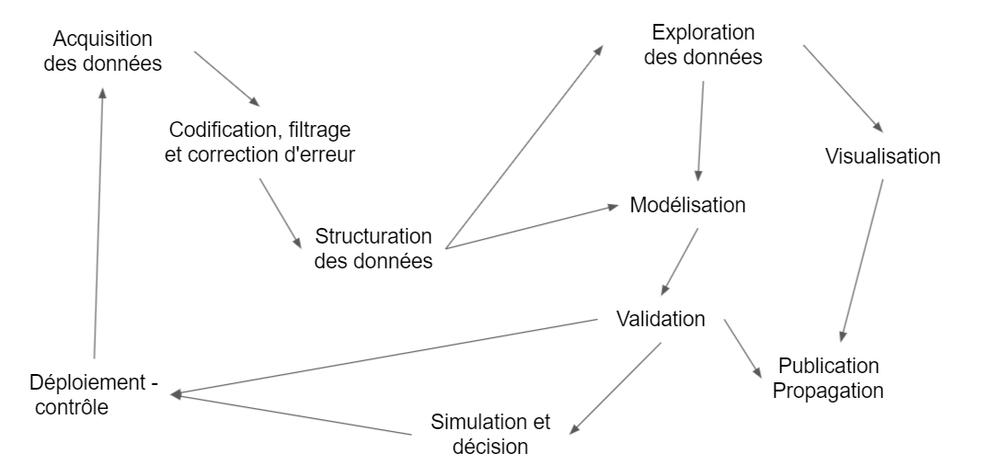

Chapitre 2 Introduction aux data sciences
2.1 Objectif et sommaire
L’objet du manuel est de donner un aperçu général des méthodes d’analyses de données et de data science.
2.2 Science ou technique ?
Plûtôt que le terme consacré de Data sciences, il vaudrait mieux parler de data ingiénérie dans la mesure où le data scientiste participe à un processus de production qui va de l’acquisition des donnée à leur propagation dans l’organisation ou la société. La technique domine sur la science et l’unité se trouve dans l’intégration de ce processus. La révolution des données vient de l’interopérabilité croissante de ces techniques et d’une intégration qui fluidifie le passage d’une étape à une autre. Standards et langages en sont les éléments clés.
Du côté des sciences, ce dont bénéficie l’univers des data sciences, c’est l’héritage de cultures statistiques foisonnantes qui après s’être développées dans leur cocon displinaire, se retrouvent désormais rassemblées dans un même langage. Bien sur il y a de manière sous-jascente à ces cultures les mathématiques et les statistiques mathématiques qui construisent les fondements des modèles et des techniques. Mais le développement s’est fait souvent quand le scientifique se retrouve face à un problème où une observation.
Prenons le cas des psychologues qui ont inventé l’analyse factorielle dans le but de pouvoir tester certains de leurs concepts : un degré d’intelligence, une personnalité, des attitudes.
Ou celui des écologues qui souhatent estimer une population de poisson dans une rivière, problème qui a donné naissance aux modèles de capture recapture. On pourrait ajouter les géographes avec les modèles d’analyse spatiale, les financiers face à la variabilité des cours des places boursières, etc. Celui des économètres est peut-être le plus évident. Les biostatisticiens sont des contributeurs importants.
Ce que la technique apporte c’est l’intégration par un langage et donc un ensemble de conventions, incarnées par r et python, d’algoritmes, et de programmes qui ne sont plus spécifique à un domaine, mais peuvent circuler de l’un à l’autre. C’est ainsi que le catalogues de toutes les techniques psychométriques devient accessible aux autres disciplines par le biais d’un pachage en particulier , psych. De la même manière l’outillage des linguiste devient accessible aux autres disciplines, pensons aux économiste qui intéègre dans le indicateurs des sources textuelle telle que l’analyse du sentiment.
L’interopérabilité apportée par ces langages ne se définit pas que par l’algorithme qui aurait été porté d’un autre langage vers celui-ci ( des cas de réécriture ?) mais aussi par des programme passerelle qui à partir de r permettent d’activité des algorithme écrit en C, en javascript ou tout autre langage “plus informatiques” et souvent plus éfficace.
2.3 histoires des logiciels statistiques
Et c’est ce qu’on observe dans l’évolution des logiciels
- 1980 : statitcf
- 1980 : SAS comme accès à r
- 1990 : SPSS
http://www.deenov.com/blog-deenov/histoire-du-logiciel-spad.aspx
des système portable
intégration graphique
la modularisation : base /fonction/ packages
2.4 Le processus de traitement des données

- Acquisition
- Codification , filtrage et correction d’erreur
- Structuration des données : api, open data
- Exploration
- Modélisation :
- validation : tests versus AB testing
- Simulation et décision
- Vizualisation et sensemaking
- Déploiement :
- Contrôle :
- Publication : dash board, pdf , slide etc, webb site
2.5 Les facteurs de développement des datasciences
Ces développements sont favorisés par un environnement fertile dont trois facteurs se renforcent mutuellement.
2.5.1 Une lingua franca
histoire de r histoire de python
2.5.2 Une communauté
Le second facteur , intimement lié au premier, est la constitution d’une large communauté de développeurs et d’utilisateurs qui se retrouvent aujourd’hui dans des plateformes de dépots (Github, Gitlab), de plateformes de type quora (StalkOverFlow), de tutoriaux, de blogs (BloggeR), de journaux (Journal of Statistical Software) et de bookdown.
Des ressources abondantes sont ainsi disponibles et facilitent la formation des chercheurs et des data scientists. Toutes les conditions sont réunies pour engendrer une effervescence créative.
2.5.3 La multiplication des sources de données.
Le troisième est la multiplication des sources de données et leur facilité d’accès. Les données privées, et en particulier celles des réseaux sociaux, même si un péage doit être payé pour accéder aux APIs, popularisent le traitement de données massives. Le mouvement des données ouvertes (open data) proposent et facilitent l’accès à des milliers de corps de données : retards de la SNCF, grand débat, le formidable travail de l’Insee, european survey etc.
2.5.4 du ML à l’IA
Le retour au boites noires dans les années 2000. Ce qui distingue les statistiques traditionnelles de l’approche machine learning réside d’abord par une approche de la modèlisation différente. Les modèles statistiques et économétriques considèrent non seulement une structure ( moddèle linéaires par ex), la spécification du modèle, mais aussi des modèles de distribution qui définissent le cadre d’estimation. L’évaluation passe par le test du respects des hypothèses de constructions ( distribution des erreurs), et de la qualité d’ajustement. Le machine learning, se concentre sur la valeur prédictive, et considère n’importe quelle spécification même si elle est peu intelligible et comprend de grandes quantité de paramètres.
KNN, SVM, rf et le retour des réseaux de neurones.
La révolution des convolutions et la multiplication des architectures